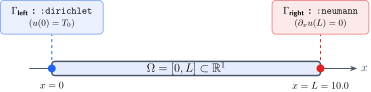
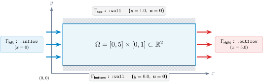

Geometry Tutorial
Bramble.jl provides a high-performance, zero-allocation geometric modeling subsystem designed for partial differential equations (PDEs) and numerical discretization schemes on Cartesian and tensor-product meshes.
In this tutorial, you will learn how to:
Construct 1D intervals and multi-dimensional
CartesianProducts.Handle collapsed (lower-dimensional) geometries.
Query spatial and topological dimensions, bounds, centers, and containment.
Define boundary labels and markers with
markersand@markers.Build complete computational
Domains ready for mesh generation and PDE solvers.
1. Sets and Intervals (CartesianProduct)
At the core of the geometry system is CartesianProduct{D, T}, which represents the Cartesian product of $D$ closed intervals in $\mathbb{R}^D$ with coordinate type T.
1.1 Creating 1D Intervals
Use interval to define closed intervals $[a, b] \subset \mathbb{R}$:
using Bramble
# Define the interval [0.0, 1.0]
I = interval(0.0, 1.0)
# Automatic conversion of integer bounds to floating point
I_int = interval(0, 2) # CartesianProduct{1, Float64}
# Create a single degenerate point [0.5, 0.5]
P = point(0.5)
# Bounding box of any two numbers (ordered automatically)
B = box(1.5, 0.2) # [0.2, 1.5]1.2 Multi-Dimensional Sets via the Tensor Product Operator ×
Multi-dimensional hyper-rectangles are constructed intuitively by taking the tensor product of lower-dimensional sets using the × (\times<tab>) operator:
# 2D Unit square: [0, 1] × [0, 1]
Ω_2d = interval(0.0, 1.0) × interval(0.0, 1.0)
# 3D Cuboid: [-1, 1] × [0, 2] × [0, 0.5]
Ω_3d = interval(-1.0, 1.0) × interval(0.0, 2.0) × interval(0.0, 0.5)Alternatively, you can construct products directly using tuples of interval pairs:
# Direct tuple construction
Ω_2d = cartesian_product(((0.0, 1.0), (0.0, 2.0)))2. Querying Geometric Properties
Bramble.jl provides a comprehensive, type-stable query interface:
X = interval(0.0, 2.0) × interval(-1.0, 1.0)
# Spatial embedding dimension (D = 2)
dim(X) # 2
# Topological dimension
topo_dim(X) # 2
# Interval bounds
tails(X) # ((0.0, 2.0), (-1.0, 1.0))
tails(X, 1) # (0.0, 2.0) -- bounds in dimension 1
tails(X, 2) # (-1.0, 1.0) -- bounds in dimension 2
# Geometric center
center(X) # (1.0, 0.0)
# 1D projection onto a specific axis
proj_x = projection(X, 1) # interval(0.0, 2.0)Point Containment (in / ∈)
Check whether a point lies within a CartesianProduct:
# In 1D:
I = interval(0.0, 1.0)
0.5 ∈ I # true
1.5 ∈ I # false
# In 2D (supports Tuples, SVector, and Vectors):
X = interval(0.0, 1.0) × interval(0.0, 1.0)
(0.5, 0.5) ∈ X # true
(1.2, 0.3) ∈ X # false3. Collapsed and Lower-Dimensional Geometries
A dimension is considered collapsed if its interval is degenerate ($a = b$). Bramble accurately tracks collapsed dimensions without heap allocations, enabling seamless modeling of lower-dimensional surfaces or interfaces embedded in higher-dimensional spaces:
# 1D line embedded in 2D space: x ∈ [0, 1], y = 0
line_in_2d = interval(0.0, 1.0) × point(0.0)
dim(line_in_2d) # 2 (spatial embedding dimension)
topo_dim(line_in_2d) # 1 (topological dimension)
# Check if individual dimensions are collapsed
line_in_2d.collapsed[1] # false (x-axis is extended)
line_in_2d.collapsed[2] # true (y-axis is collapsed)4. Boundary Markers (markers and @markers)
PDE boundary conditions require tagging specific domain boundaries (e.g., Dirichlet, Neumann, Robin, inflow/outflow).
4.1 Boundary Symbol Conventions
For a $D$-dimensional domain, the standard boundary facets are:
1D:
:left,:right2D:
:bottom,:top,:left,:right3D:
:bottom,:top,:back,:front,:left,:right
You can inspect standard boundary symbols using get_boundary_symbols:
get_boundary_symbols(2)
# (:bottom, :top, :left, :right)4.2 Creating Markers
Markers are defined as :label => :identifier pairs where :identifier can be a single boundary symbol, a tuple of symbols, or a boolean function:
geom = interval(0.0, 5.0) × interval(0.0, 1.0)
# Define markers on the geometry:
m = markers(
geom,
:inflow => :left,
:outflow => :right,
:wall => (:top, :bottom)
)
# Retrieve all defined labels
collect(labels(m))
# [:inflow, :outflow, :wall]5. Computational Domains (Domain)
A Domain joins a geometric set (CartesianProduct) with its boundary markers into a single unified object:
# 1. Define geometry
geom = interval(0.0, 1.0) × interval(0.0, 1.0)
# 2. Construct domain with inline boundary markers
Ω = domain(
geom,
:dirichlet => (:left, :right),
:neumann => (:top, :bottom)
)
# Or create a default domain marking all external boundaries as :boundary
Ω_default = domain(geom)5.1 Domain Trait Delegation
Domain automatically delegates geometric and marker methods directly:
dim(Ω) # 2
topo_dim(Ω) # 2
tails(Ω) # ((0.0, 1.0), (0.0, 1.0))
center(Ω) # (0.5, 0.5)
(0.5, 0.5) ∈ Ω # true
# Access underlying set and markers
set(Ω) # CartesianProduct{2, Float64}
markers(Ω) # DomainMarkers
collect(labels(Ω)) # [:dirichlet, :neumann]6. Practical Examples
Example 1: 1D Rod with Mixed Boundary Conditions
Consider heat conduction along a 1D rod $\Omega = [0, L]$ with $L = 10.0$, fixed temperature at $x = 0$ (:left) and insulated end at $x = L$ (:right):

L = 10.0
rod_geom = interval(0.0, L)
# Define domain with Dirichlet left boundary and Neumann right boundary
rod = domain(
rod_geom,
:dirichlet => :left,
:neumann => :right
)
println("Domain: ", rod)
println("Dimension: ", dim(rod))
println("Active Labels: ", collect(labels(rod)))Example 2: 2D Channel Flow Domain
Consider fluid flow in a rectangular channel $[0, 5] \times [0, 1]$ with an inflow on the left, outflow on the right, and no-slip walls on top and bottom:

channel_geom = interval(0.0, 5.0) × interval(0.0, 1.0)
channel = domain(
channel_geom,
:inflow => :left,
:outflow => :right,
:wall => (:top, :bottom)
)
@assert dim(channel) == 2
@assert (2.5, 0.5) ∈ channel
println("Channel labels: ", collect(labels(channel)))Example 3: 3D Heat Sink Domain
Consider heat dissipation across a 3D block $[0, 2] \times [0, 2] \times [0, 1]$ subjected to a bottom heat source, top convective cooling, and insulated lateral walls:

sink_geom = interval(0.0, 2.0) × interval(0.0, 2.0) × interval(0.0, 1.0)
sink = domain(
sink_geom,
:heat_source => :bottom,
:convection => :top,
:insulated => (:left, :right, :front, :back)
)
println("3D Domain Center: ", center(sink))
println("Active Labels: ", collect(labels(sink)))